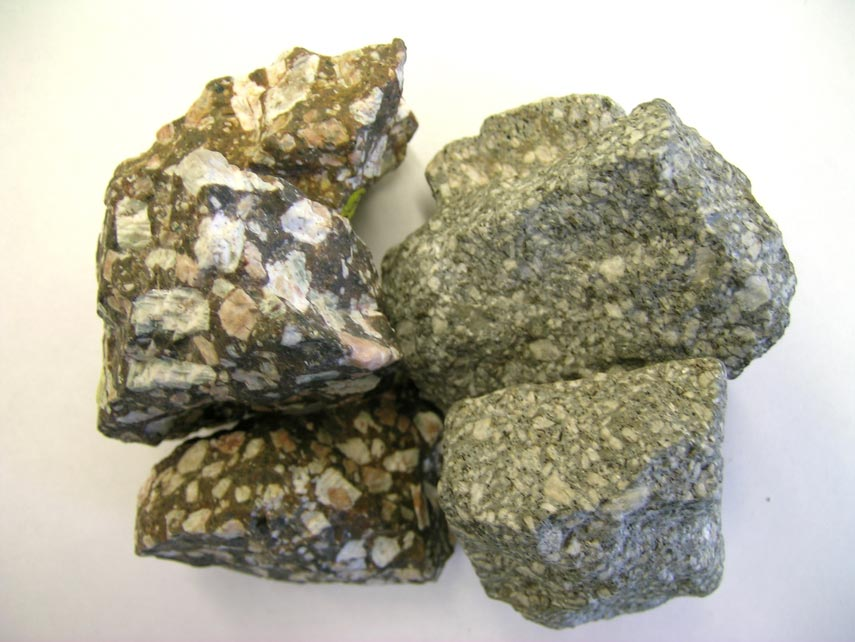
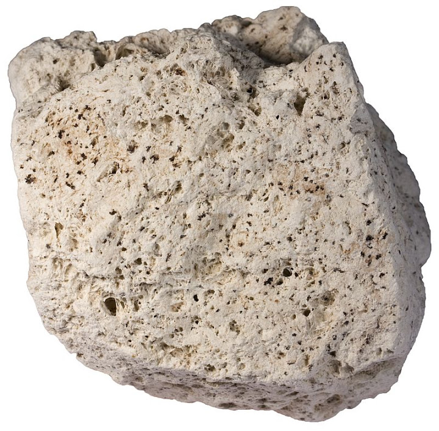
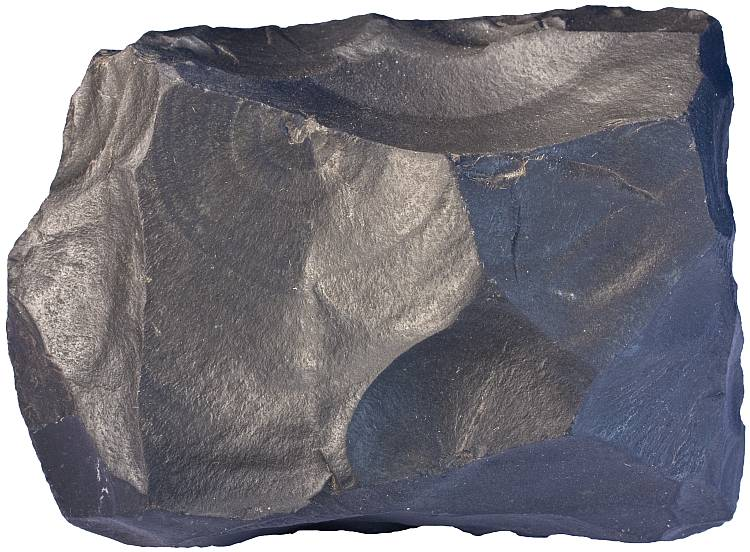
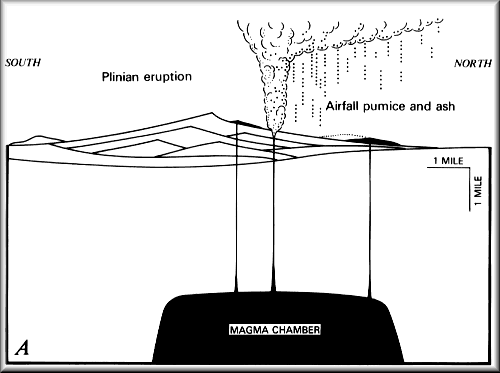
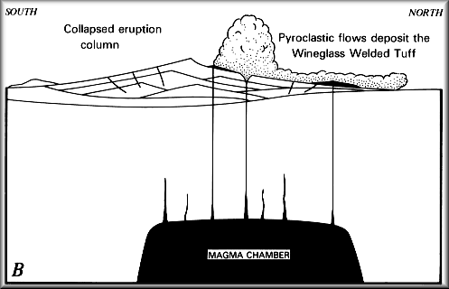
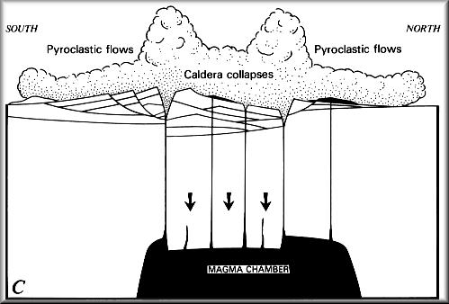
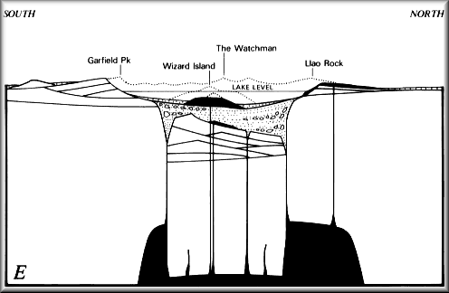

Mount Mazama: The former name of Crater Lake.
Stratovolcano: A volcano built up of alternate layers of lava and ash.
Caldera: A large volcanic crater, typically one formed by a major eruption leading to the collapse of the mouth of the volcano.
Wineglass Welded Tuff: A red wall of pumice and other minerals merged togther from the latest lava flow to date
Pyroclastic: a dense, destructive mass of very hot ash, lava fragments, and gases ejected explosively from a volcano and typically flowing downslope at great speed
Fumaroles: An opening in or near a volcano, through which hot sulfurous gases emerge.
Porphyritic Andesite
Pumice
Basalt
Mount Mazama was also built up mostly of andesite, dacite, and rhyodacite
Pumice and ash are deposited, covering the landscape
Vent enlarges and eruption column collapses, and pyroclastic flows deposit the Wineglass Welded Tuff
Roof of magma chamber collapses, forming caldera as new vents open above fractures
Caldera becomes partly filled with pumice, ash and blocks of rock from the caldera walls
Weak, dying explosions within the caldera deposit ash on the caldera rim
Pyroclastic-flow deposits develop fumaroles and gradually cool
Current day Crater Lake
400,250
years was the time the Crater Lake took to be formed.
Mazama took 400,000 years to be formed,
while it took 250 years of acculation of rain and snow for
Crater Lake to fill up.